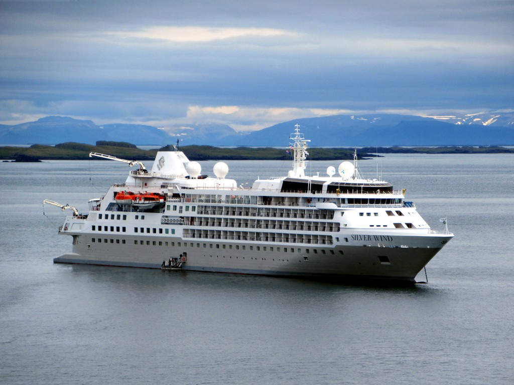

Um navio Wind Class com 7 decks de passageiros, 17.400 GT, casco ice-class, 24 botes Zodiac e capacidade oficial para até 274 hóspedes.

O Silver Wind entrou em serviço em 1995 como um dos navios da Wind Class da Silversea Cruises. Construído na Itália e concebido desde a origem como um navio pequeno para padrões oceânicos, ele ajudou a consolidar a proposta boutique e all-suite da marca em um momento em que o ultra-luxo ainda era um nicho raro no mercado de cruzeiros.
O navio passou por uma grande modernização em 2018 e por uma segunda reforma importante em novembro de 2021, quando recebeu casco reforçado para gelo e evoluiu para um perfil ainda mais expedition-ready. No material oficial da Silversea, essa fase é apresentada como a transformação que tornou o Silver Wind um dos navios mais adaptáveis da frota, capaz de alternar entre regiões polares e portos icônicos com muito mais flexibilidade.
Entre os destaques mais associados ao Silver Wind estão The Grill, La Terrazza, The Restaurant, La Dame, Panorama Lounge, Observation Library, Zagara Beauty Spa, Dolce Vita e The Show Lounge, além de uma operação expedition apoiada por 24 botes Zodiac. O conjunto preserva a atmosfera de hotel boutique no mar, mas acrescenta infraestrutura para desembarques e exploração em destinos remotos.
Nos materiais oficiais recentes da Silversea, o navio aparece em roteiros de Antártica, Ártico e Groenlândia, e em conteúdos editoriais da companhia também surge ligado a Atlântico Norte, Norte da Europa e algumas operações sazonais de clima mais ameno. Esse alcance reforça o papel do Silver Wind como ponte entre o ultra-luxo clássico da companhia e sua frente contemporânea de expedições.
* Planta resumida por áreas. Para o mapa detalhado de suítes, cabines e circulação oficial, acesse Silversea — deck plan oficial.